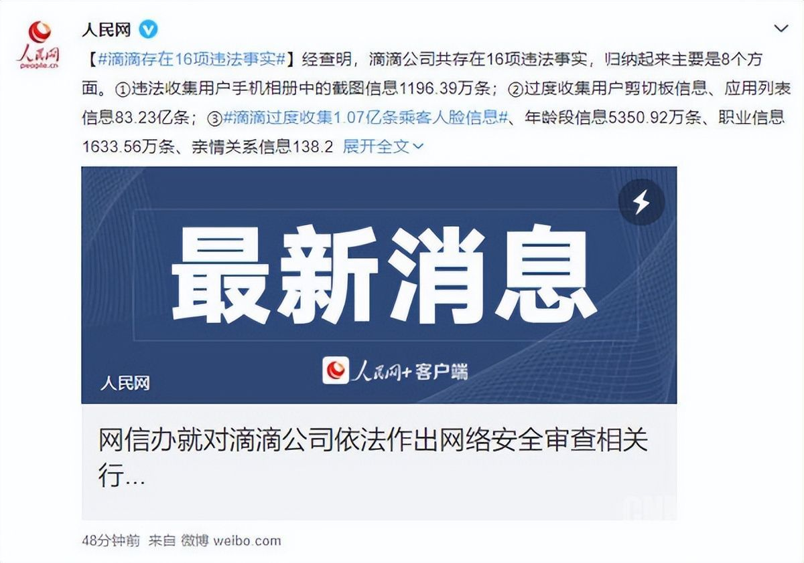
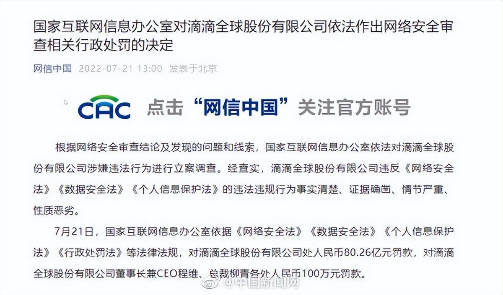

工程伦理与网络安全法 · 小组汇报
80.26 亿元罚款，647.09 亿条个人信息，七年时间。这条采集链是从功能需求里长出来的。
第 7 组 刘昊阳 刘科阳 鲁瑜 彭超 彭真昕
三个数字
罚款（元）
违法处理的个人信息
违法行为持续时间
16 项事实，8 个方面，持续 7 年。
Timeline
网约车、顺风车、两轮车
处罚决定认定的最早时间
7 月 2 日审查，7 月 4 日下架
80.26 亿元，两名高管各 100 万
全面自查，退出美股
违法从 2015 年 6 月开始，两部新法 2021 年秋天才施行。同一套做法，在法条落地之后变成了违法。
Case · 2013–2021
一笔订单要在几秒内派给最合适的司机，判断越准，成交率越高，要发的补贴越少。数据采集因此从辅助功能变成了核心能力。
到 2021 年，境内 41 款 App 共用一套账号、支付、定位与画像体系。相册用来看行程凭证，剪切板用来识别口令，应用列表用来判断用户装没装竞品。
每一项在当时都能在需求文档里找到依据，问题在于没有人核算总量。
滴滴位于北京中关村数字山谷的办公楼（室内设计项目实景）
Case · 2021–2022
6 月 30 日上市；7 月 2 日，网络安全审查办公室宣布启动审查，审查期间停止新用户注册；7 月 4 日，网信办通报 App 严重违法违规收集使用个人信息，通知下架。
7 月中旬多部门联合进驻。新用户注册停了一年，12 月宣布启动从纽交所退市，2022 年 6 月完成。
处罚决定公布：罚款 80.26 亿元，程维、柳青各 100 万元。
「为防范国家数据安全风险，维护国家安全，保障公共利益……对『滴滴出行』实施网络安全审查，审查期间『滴滴出行』停止新用户注册。」
—— 网络安全审查办公室公告，2021-07-02Data · 16 项事实
Engineering view
需求叫「上传行程凭证」，实现只有几行权限申请。相册里的聊天记录、证件照、银行短信一起进了服务器。1196.39 万条。
写进 SDK，每次启动自动执行。识别口令、判断竞品，和打车无关。83.23 亿条。
收集有正当性，存储方式没有。5780.26 万条明文，拖库就收不回来。
顺风车场景反复要「电话权限」。权限清单和功能清单对不上。
Evidence · 官方怎么说的

人民网微博通报：16 项违法事实，归纳为 8 个方面
① 违法收集相册截图 1196.39 万条
② 过度收集剪切板、应用列表 83.23 亿条
③ 过度收集人脸识别 1.07 亿条
④ 精准位置（含后台运行） 1.67 亿条
⑤ 司机身份证号明文存储 5780.26 万条
Penalty · 处罚长什么样

「网信中国」发布的处罚决定（2022 年 7 月 21 日）
依据《网络安全法》《数据安全法》《个人信息保护法》《行政处罚法》等法律法规，对滴滴全球股份有限公司处人民币 80.26 亿元罚款，对董事长兼 CEO 程维、总裁柳青各处人民币 100 万元罚款。
—— 国家互联网信息办公室处罚决定Legal basis · 三部法律各管一段
网络安全法
第 41 条 收集使用个人信息的原则
第 21 条 等级保护 第 42 条 不得泄露
数据安全法
第 27 条 数据安全管理制度
第 36 条 向境外提供数据的限制
个人信息保护法
第 6 条 最小必要 第 17 条 告知
第 28 条 敏感个人信息
三条法各管一层：网络运行秩序、数据安全、个人权益。三层同时被突破，处罚就落三次，罚的是三种不同的违法后果。
Enforcement · 两道程序
依《国家安全法》《网络安全法》《网络安全审查办法》，查数据处理是否影响国家安全。
调查询问、技术取证、听取企业意见。
三法并罚，企业与主管人员同时追责。
全面自查；上市不足一年即启动退市。
「网络安全审查还发现，滴滴公司存在严重影响国家安全的数据处理活动，以及拒不履行监管部门的明确要求、阳奉阴违、恶意逃避监管等其他违法违规问题。因涉及国家安全，依法不公开。」
—— 网信办答记者问，2022-07-21Ethics
功利主义
收益在财报，代价分摊到几亿人。两边不在一个账本上，加总算出的总量并不成立。
本案：出行意图 539.76 亿条，换来更准的推荐与更少的补贴。义务论
隐私政策几十页，权限与功能捆绑，不点就用不了。这次点击更接近形式。
本案：41 款 App 共用一套授权流程。责任伦理
后果在时间上滞后、空间上分散，判断不能只看当下好不好用。
本案：「读取剪切板」写进 SDK，七年后是 83.23 亿条。分配正义
罗尔斯的差异原则要求制度安排改善最不利者的处境。
本案：数据用户产、收益归平台、风险留用户。Takeaways
相册权限能申请，但相册里没有行程单。能力存在，不等于使用正当。
最小必要在需求评审时就能判断：这个功能最少要哪些数据，多要的砍掉。
处罚决定的原话是「阳奉阴违、恶意逃避监管」，指向的是组织执行方式。
三法在 2021 年补齐，2015 年开始的做法立刻变成违法。边界会移动。
Conclusion
不存在某一处「写错了」，这是一套长期运行、无人复核的默认设置。
合规没有否决权，评估排在上线之后，违规只是时间问题。
产品边界跟着法条移动，早一步算进需求，比事后补便宜得多。
Discussion
产品经理要读取剪切板提升推荐，说这是行业通行做法。你怎么判断、怎么行动？
提示：区分「功能需要」与「转化率需要」。点「同意」等于同意一切吗？一揽子同意为何难构成有效同意？
提示：最小必要、单独同意、敏感信息。企业罚 80 亿、个人各罚 100 万，合理吗？你会怎么改？
提示：个人罚款额低，但追责信号强。Q & A
第 7 组 刘昊阳 刘科阳 鲁瑜 彭超 彭真昕
资料来源：国家互联网信息办公室处罚决定与答记者问（2022-07-21）；网络安全审查办公室对滴滴启动审查的公告（2021-07-02）；下架「滴滴出行」App 的通报（2021-07-04）。图片来自人民网官方微博、网信中国公众号及公开资料。